Baidu 자율굴착 논문 카드 요약 2019-2024
Baidu 자율굴착 논문 카드 요약 2019-2024
[!note] 2019 · Compact R-map 동작계획 1) 대표그림
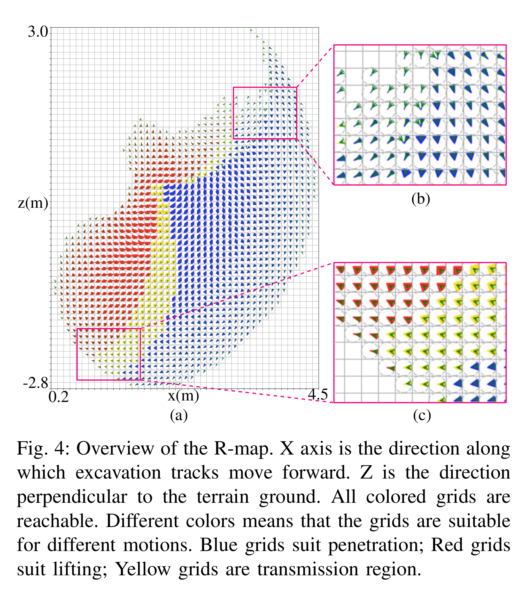
2) 요약
굴착기 기구학을 2차원 Compact R-map으로 사전 계산해, 버킷 자세와 직선 이동 가능 거리를 즉시 조회하며 굴착 궤적을 계획
3) 방법
- 링크 치수·관절 한계·버킷 형상으로 굴착 평면을 격자화
- 각 격자 자세에 역기구학을 적용해 헤딩 구간과 방향별 이동 거리를 저장
- 지형과 접근점을 입력해 침투·드래그·회전·인양 경로를 조회하고 관절 궤적으로 변환
4) 토의
- 한계: 기구학 위주라 토크 한계와 토양 저항을 반영하지 않았고, 실제 굴착기 검증 필요
- 연구주제: 유압 압력과 관절 토크로 격자별 실행 가능도를 온라인 보정하는 동역학 적응형 R-map을 개발
[!note] 2020 · 시간 가변 최소 토크 궤적 1) 대표그림
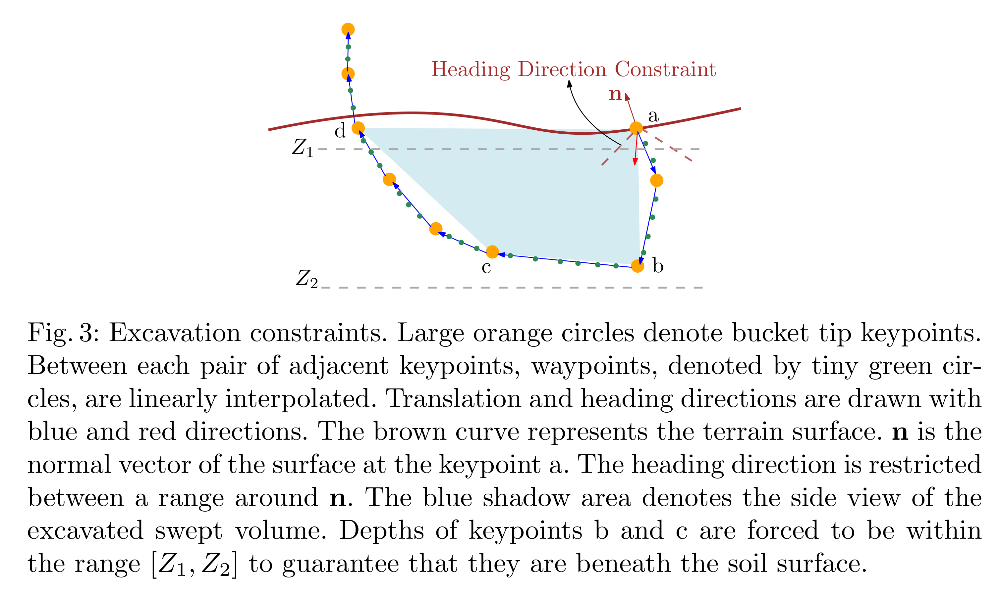
2) 요약
관절 keypoint와 구간 시간을 함께 최적화하고 토양 저항을 역동역학에 넣어, 실행 가능한 최소 토크 굴착 궤적을 생성
3) 방법
- R-map 초기 궤적과 굴착기 동역학·토양 계수·목표 굴착량을 입력
- keypoint 사이를 보간하고 버킷의 지중 운동으로 토양력을 계산해 관절 토크를 산출
- 속도·토크·굴착량 제약 아래 토크 제곱합과 작업시간 최적화, 궤적 출력
4) 토의
- 한계: 토양 계수가 고정된 단순 모델이고 최적화가 느려, 변화하는 현장의 온라인 재계획에 어려움
- 연구주제: 유압·관절 센서로 토양 계수를 실시간 식별하고 이전 해를 재사용하는 receding-horizon 계획기를 연구
[!note] 2020 · AES: 위험 환경용 자율굴착기 1) 대표그림
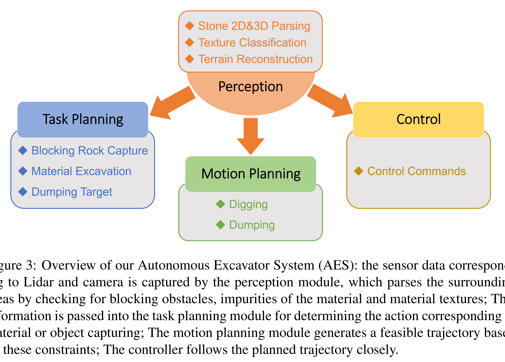
2) 요약
비정형·위험 현장의 무인 굴착·적재를 위해 LiDAR·카메라 인지와 시연학습 기반 목표 선택, STOMP 궤적계획을 통합
3) 방법
- LiDAR·RGB-D·관절센서로 지형, 재질, 장애물과 덤프트럭 위치를 인식
- 높이맵에서 시연학습 모델로 버킷 접촉점과 굴착 거리를 정하고 IRL 비용을 호출
- STOMP로 장애물을 피하는 굴착·덤핑 궤적을 만든 뒤 유압 관절제어로 실행
4) 토의
- 한계: 인지 정확도와 센서 신뢰성에 크게 의존하며 눈·얼음과 악천후 조건은 검증하지 않음
- 연구주제: 악천후에서 센서 신뢰도를 추정해 계획 비용과 정지 정책을 조절하는 불확실도 인지형 굴착기를 연구
[!note] 2021 · 강체 군집 굴착 계획 1) 대표그림
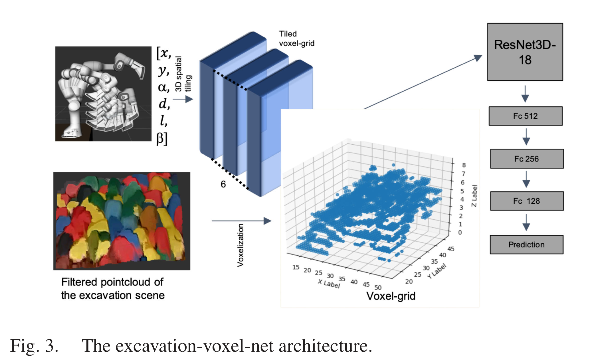
2) 요약
뒤엉킨 강체의 점군과 6차원 굴착 궤적을 voxel로 합치고, ResNet3D 성공예측기와 CEM으로 1회 굴착량이 큰 궤적을 선정
3) 방법
- RGB-D 점군을 작업 좌표계로 변환하고 occupancy voxel을 생성
- 공격점·각도·깊이·끌기·닫힘을 voxel에 넣어 성공예측기를 학습
- CEM으로 후보 궤적을 반복 갱신하고 최상위 유효 궤적을 IK로 실행
4) 토의
- 한계: 단일 굴착량만 탐욕적으로 최적화하며 실제 굴착기의 토양 저항과 연속 작업은 다루지 않음
- 연구주제: 점군 정책이 연속 공격점을 고르고 힘 피드백 제어가 걸림을 회피하는 계층형 굴착기를 연구
[!note] 2021 · 계층형 작업·차체·팔 계획 1) 대표그림
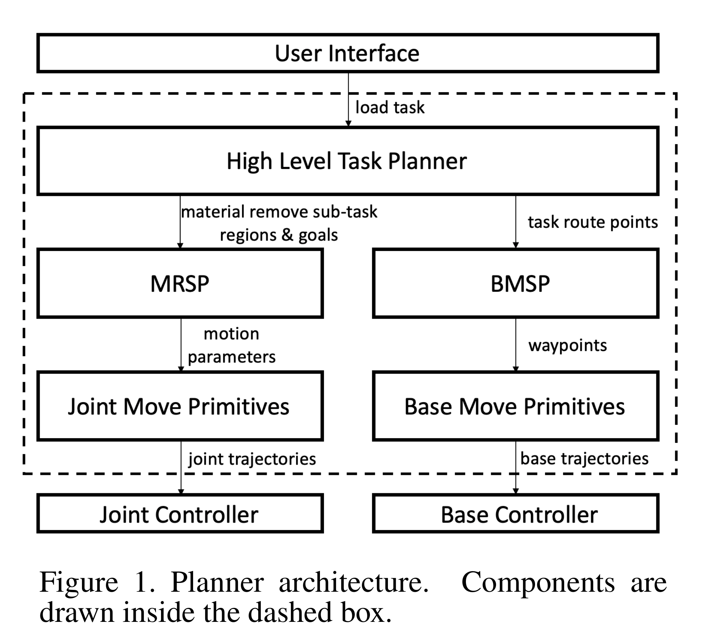
2) 요약
도랑·파일 제거 작업을 정차 위치와 국소 굴착영역으로 분해하고 차체 이동과 팔 동작을 연결하는 계층형 계획 구조
3) 방법
- 목표 작업영역·높이와 장비 도달범위를 입력해 정차 위치와 국소 굴착영역을 생성
- 각 영역의 높이맵에서 굴착점을 정하고 목표높이에 이를 때까지 굴착·덤핑을 반복
- 영역 간 경로는 Hybrid A*로 만들고 MPC와 관절제어로 차체와 팔을 순차 실행
4) 토의
- 한계: 차체 이동계획이 2D에 머물러 거친 지형의 경사와 굴착기 균형을 고려하지 못함
- 연구주제: 3D 지형과 질량중심을 함께 반영해 안전한 정차 위치와 이동경로를 정하는 안정도 제약 계획을 연구
[!note] 2021 · 굴착 spline 최적화 1) 대표그림
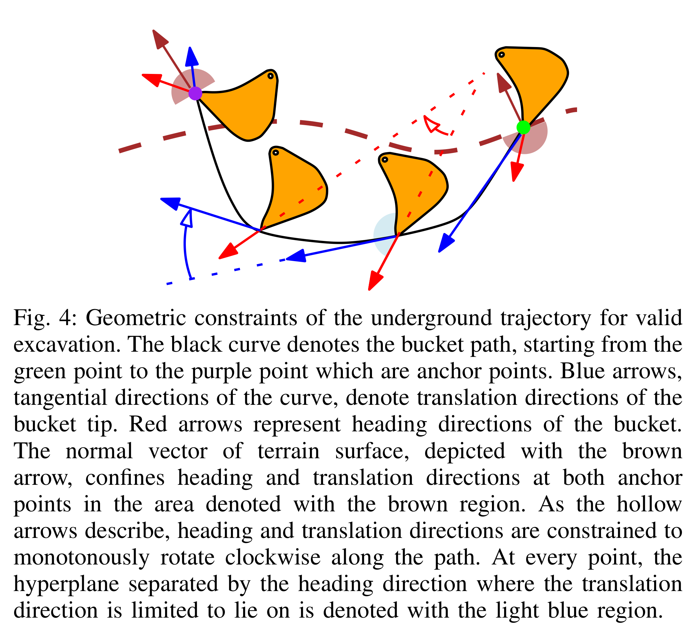
2) 요약
버킷 이동방향·헤딩 관계와 굴착 체적만 제약한 spline 최적화로, 정형화된 단계 없이 짧고 빠른 굴착 궤적을 생성
3) 방법
- height map, 시작·종료 자세, 목표 적재율, 관절 한계를 입력
- 관절 waypoint와 구간 시간을 spline으로 연결하고 버킷 운동·굴착 체적 제약을 구성
- 시간 또는 관절변위를 최소화한 궤적을 실행하고 매 굴착 뒤 height map을 갱신
4) 토의
- 한계: swept volume이 실제 적재량을 과대평가하고 시간까지 함께 풀면 최적화 성공률이 저하
- 연구주제: 지형·토질·속도로 실제 적재량을 예측해 목표 bucket filling factor를 자동 보정하는 계획기를 연구
[!note] 2021 · 영상 기반 작업·안전 모니터링 1) 대표그림
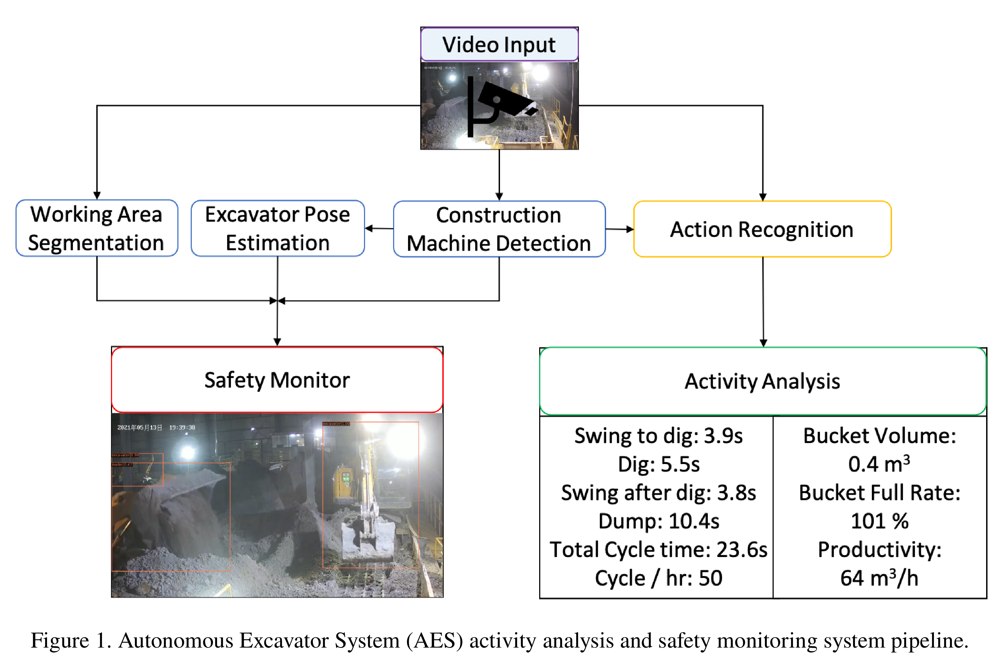
2) 요약
감시 카메라 영상에서 장비 검출·굴착기 자세·작업행동을 함께 인식해 충돌 위험과 생산성을 자동 분석
3) 방법
- 고정 카메라 영상에서 굴착기·주변 장비와 굴착·덤핑 작업영역을 주석화
- Faster R-CNN으로 장비를 검출하고 자세망으로 굴착기 10개 핵심점을 추정
- 영역·자세·행동을 결합해 작업상태를 판정하고 동일 작업영역 내 장비에 경보를 발령
4) 토의
- 한계: 소규모 단일 현장 영상에 의존하며, 충돌 판단도 동일 작업영역 점유 규칙에 제한
- 연구주제: 다중 카메라 궤적 예측으로 굴착기와 작업자·장비의 충돌 시간을 추정하는 동적 안전 모니터를 연구
[!note] 2021 · 폐루프 영상 제진 1) 대표그림
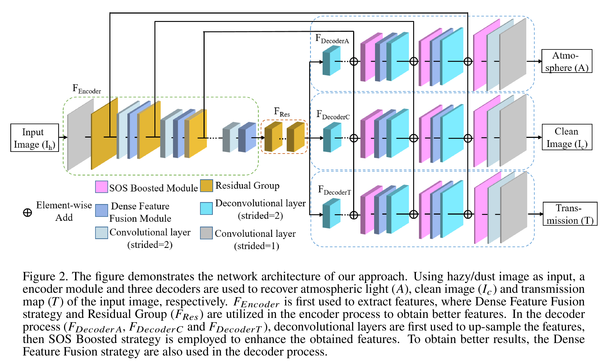
2) 요약
단일 RGB 영상에서 깨끗한 영상·대기광·투과도를 동시에 추정하고 산란 모델로 입력을 재구성해 먼지·안개를 제거
3) 방법
- 먼지 또는 안개 영상과 동일 장면의 깨끗한 영상쌍을 수집
- 공유 인코더와 세 디코더로 깨끗한 영상·대기광·투과도를 추정
- 세 출력을 산란식으로 재합성하고 원 입력과의 오차까지 함께 학습
4) 토의
- 한계: 현장 먼지 제거를 정성 사례로만 보여 검출·분할 성능 개선과 재현 설정이 불명확
- 연구주제: 제진망과 객체검출망을 공동학습해 먼지 농도 변화에도 검출 성능을 유지하는 현장용 모델을 개발
[!note] 2021 · AES: 실제 적재용 통합 자율굴착기 1) 대표그림
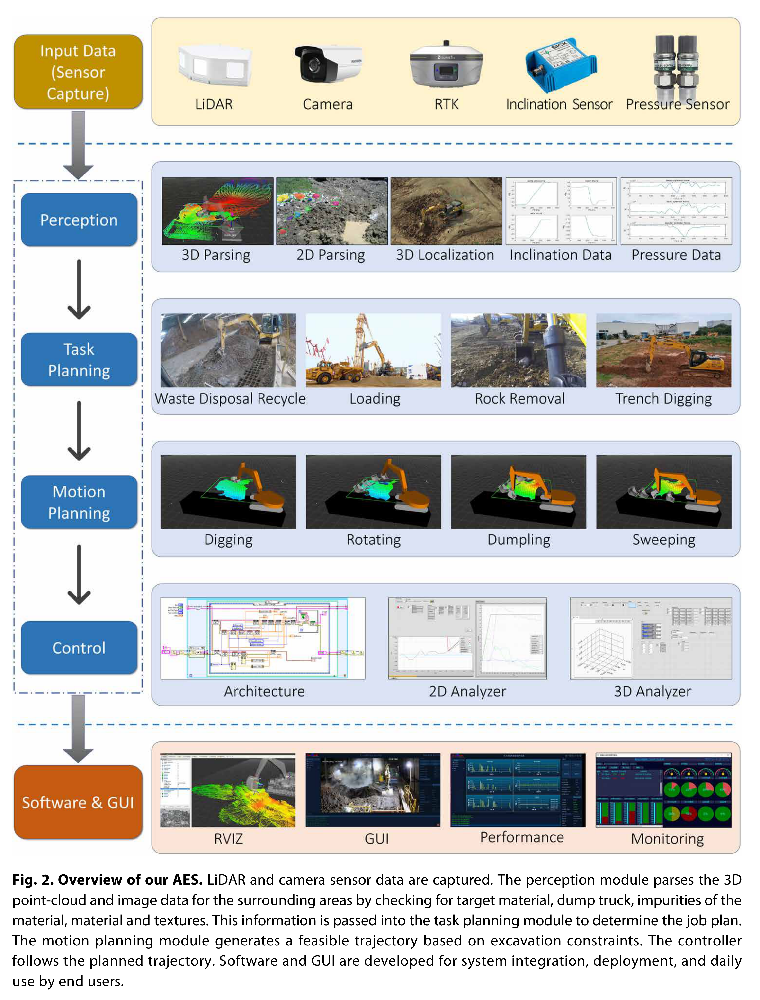
2) 요약
장시간 무인 적재를 위해 제진·재질·객체 인지와 학습 기반 목표 선택, 계층형 계획·제어를 실차 시스템으로 통합
3) 방법
- LiDAR·카메라·관절센서로 지형을 만들고 재질, 장애물과 덤프트럭 자세를 인식
- 높이맵에서 굴착 목표를 고르고 IRL 비용과 장애물 비용으로 팔 궤적을 최적화
- 작업영역을 정차 구역으로 나눠 차체를 이동시키고 유압 제어로 굴착·덤핑을 반복
4) 토의
- 한계: 토질의 강성·점성 등 물성을 충분히 인식하지 못하고 힘 피드백도 계획에 활용하지 못함
- 연구주제: 시각·지형과 버킷 압력으로 토질 물성을 온라인 추정해 굴착 궤적을 적응시키는 힘 인지 계획을 연구
[!note] 2021 · LiDAR 버킷 체적 추정 1) 대표그림
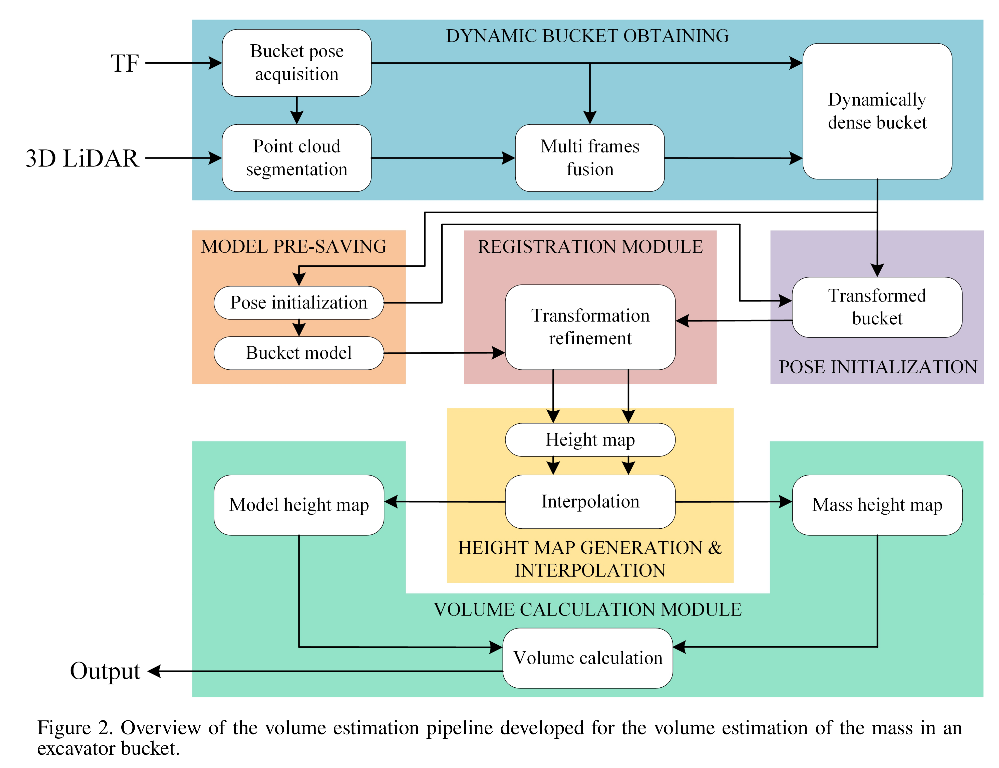
2) 요약
LiDAR 점군을 빈 버킷 모델에 정합하고 두 2.5D 높이맵의 차이를 적분해 움직이는 버킷의 적재 체적을 실시간 추정
3) 방법
- LiDAR 점군과 관절 자세를 약 10프레임 누적해 버킷 주변 점군을 생성
- 자세로 초기 정렬한 뒤 빈 버킷 모델에 ICP 정합하고 적재물 점군을 분리
- 빈 버킷·적재물 높이맵의 셀별 차이 적분, 체적·충전율 출력
4) 토의
- 한계: 2.5D 높이맵은 버킷 밖으로 돌출된 돌과 가림 형상을 계산하지 못하고 빠른 동작에 취약
- 연구주제: 운동 보상 점군 융합으로 돌출부와 가림면까지 복원하는 실시간 3D 버킷 체적 추정을 연구
[!tip] 2021 · TaskNet: 신경망 작업계획 · 🧪 직접 재현 후보 1) 대표그림
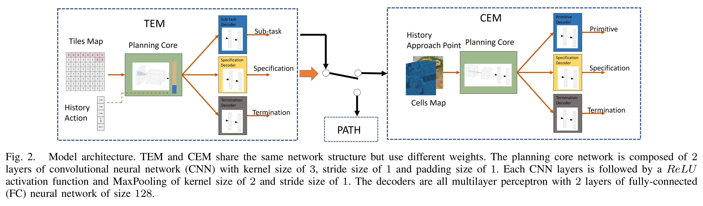
2) 요약
높이차 지도를 바탕으로 차체·굴착 하위작업과 접근·굴착 동작을 재귀적으로 예측하는 신경망 작업계획기
3) 방법
- LiDAR 높이차 지도를 장비 도달범위의 tile과 버킷 폭의 cell 격자로 변환
- 시연 시퀀스로 TEM은 이동·굴착 영역을, CEM은 접근점·굴착 깊이와 종료를 학습
- 예측된 동작을 경로·궤적계획기로 실행하고 새 관측을 받아 완료될 때까지 반복
4) 토의
- 한계: 학습 데이터를 시뮬레이션에 크게 의존하며 새로운 현장의 실차 시연 수집과 라벨링이 어려움
- 연구주제: 대량 합성 시연과 소량 실차 시연을 결합해 새 지형에 빠르게 적응하는 few-shot TaskNet을 연구
[!note] 2022 · 기하 표현 연속 굴착 1) 대표그림
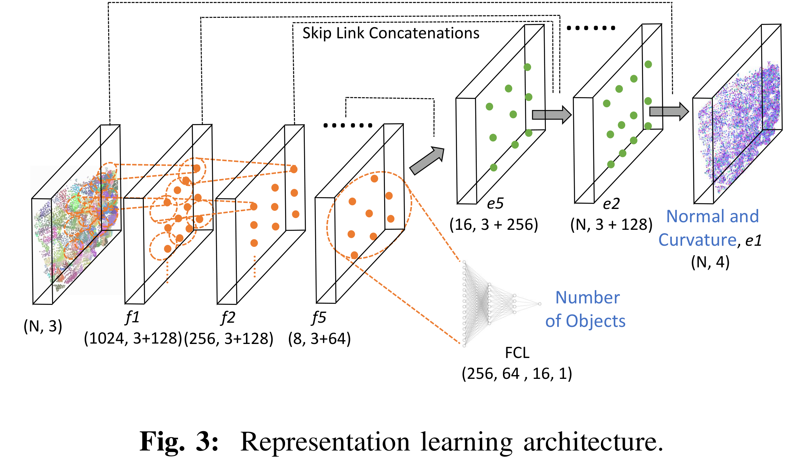
2) 요약
점군의 normal·curvature·물체 수를 학습한 PointNet++ 표현을 고정하고, PPO가 연속 굴착의 공격 위치와 각도를 선택
3) 방법
- 시뮬레이션 점군에서 normal·curvature·물체 수를 생성해 PointNet++를 사전학습
- encoder를 고정하고 장면 표현에서 공격점과 각도를 출력하도록 PPO를 학습
- 행동을 관입·끌기·닫기 궤적으로 바꿔 충돌 검사 후 로봇에서 반복 실행
4) 토의
- 한계: 정책은 공격 pose만 정하고 궤적은 고정된 open-loop라 실제 접촉 저항에서 실행 실패가 빈발
- 연구주제: 점군 상위정책과 힘·토크 기반 residual 하위제어를 결합한 접촉 강건 연속 굴착을 연구
[!tip] 2022 · 모방학습-STOMP 궤적계획 · 🧪 직접 재현 후보 1) 대표그림
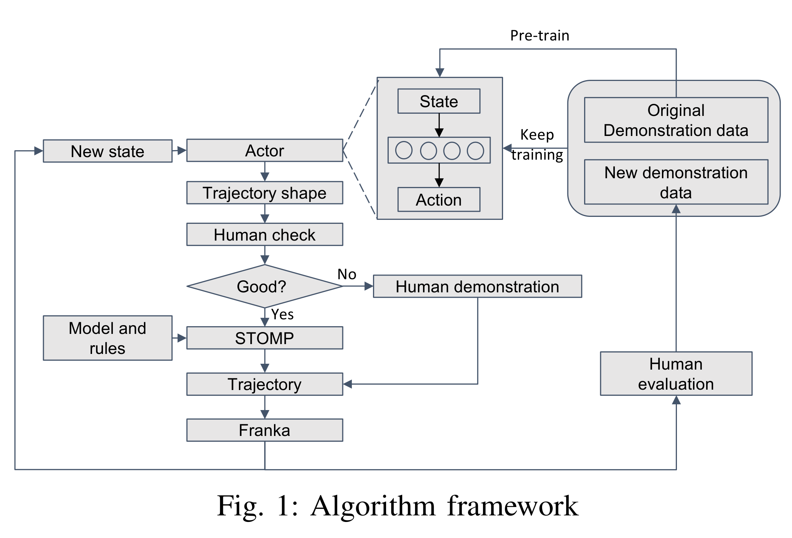
2) 요약
지형·재료에서 모방학습으로 초기 궤적을 만들고 STOMP로 안전성·부드러움·목표 굴착량을 보정
3) 방법
- point cloud를 height grid로 바꾸고 굴착 구간의 상대 높이와 재료 특징을 입력
- 전문가 궤적의 버킷 자세를 학습해 새 지형의 초기 궤적을 생성
- STOMP로 기구학·작업영역·굴착량 비용을 보정한 뒤 실행 결과를 학습 데이터에 추가
4) 토의
- 한계: 소수 시연과 사람 평가에 의존하며, 소형 로봇의 제한된 재료 실험이라 현장 일반화가 불확실
- 연구주제: 불확실할 때만 전문가 시연을 요청하고 실행 토크로 보정하는 능동 DAgger 기반 토질 적응을 연구
[!note] 2022 · 실환경 배치형 자율 굴착기 1) 대표그림
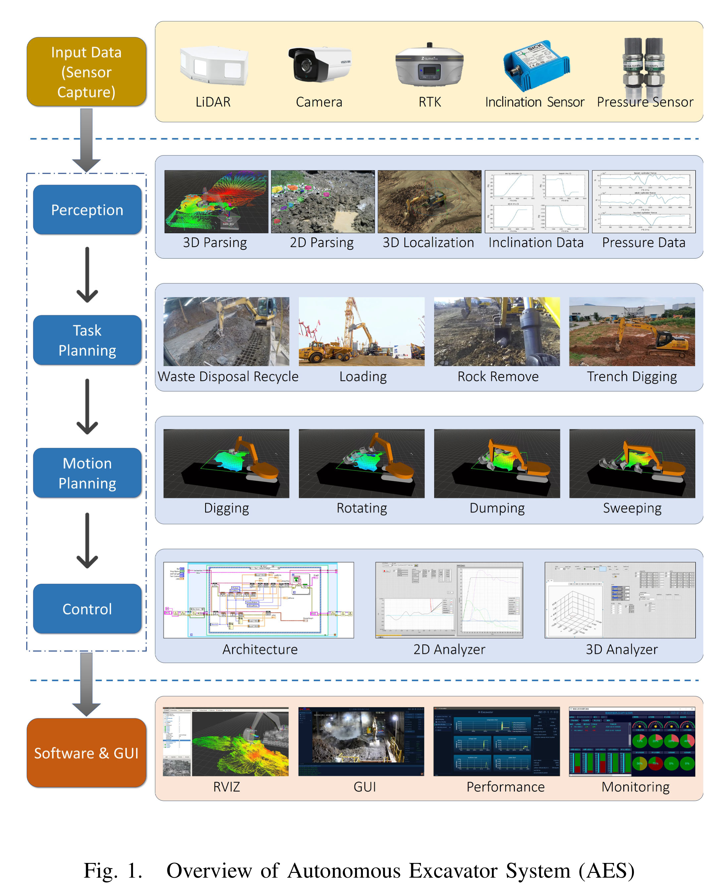
2) 요약
멀티모달 인지, 계층형 작업·동작 계획, 유압 제어를 통합해 비정형 현장에서 자재 상차를 장시간 자율 수행
3) 방법
- 굴착기에 RTK·관절 센서·LiDAR·카메라를 장착하고 CAN 제어 계층을 구성
- 영상의 재질·물체 분할과 LiDAR 깊이를 융합해 장애물 및 주행가능 지도를 생성
- 계층형 계획기로 이동·굴착 동작을 만들고 유압 제어기로 팔과 베이스를 실행
4) 토의
- 한계: 폐기물 상차 현장 중심이며 파쇄암·악천후와 자재 물성 변화에 대한 검증이 부족
- 연구주제: 영상·LiDAR·유압 압력으로 굴착 저항을 온라인 추정해 굴착 동작을 적응시키는 제어를 연구
[!note] 2022 · 휠로더 LPV-MPC 추종 1) 대표그림
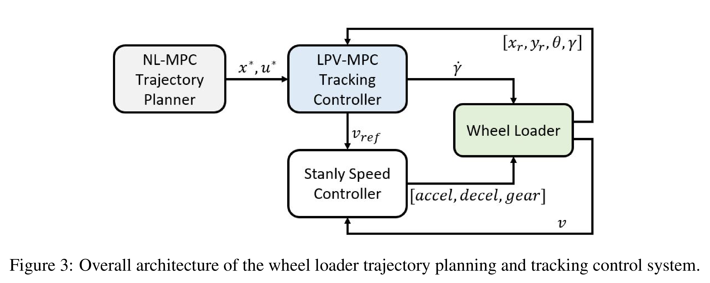
2) 요약
휠로더의 Y자 작업경로는 NL-MPC로 미리 만들고, 온라인 LPV-MPC가 굴절조향 비선형성을 반영해 궤적을 추종
3) 방법
- 적재점·하역점·장애물과 차량 제약을 넣어 NL-MPC로 기준 궤적을 계산
- 기준 궤적에서 차량모델을 선형화해 구간별 LPV 예측모델을 생성
- LPV-MPC가 조향률을 계산하고 속도제어기와 함께 전진·후진 궤적을 실행
4) 토의
- 한계: 무슬립 기구학 시뮬레이션만 검증해 지반 외란, 적재량 변화, 구동 지연의 강건성이 확인되지 않음
- 연구주제: 적재량과 타이어 slip을 온라인 추정해 모델에 반영하는 강건 LPV-MPC를 실차 작업주기로 검증
[!note] 2022 · TNS 주행성 지도·내비게이션 1) 대표그림
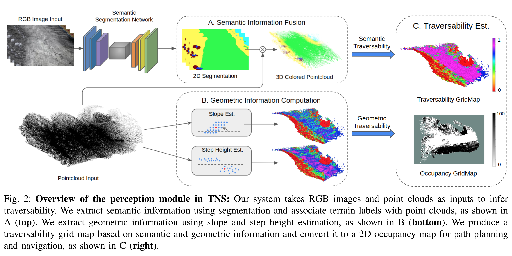
2) 요약
RGB 의미분할과 LiDAR 경사·단차를 융합해 실시간 주행성 지도를 만들고 Hybrid A*와 추종 제어로 굴착기를 자율주행
3) 방법
- 보정·동기화한 RGB, LiDAR, 위치 정보를 입력으로 수집
- 영상의 지형 의미를 점군에 투영하고 격자별 경사·단차와 융합
- 주행성 격자를 Hybrid A* 비용으로 사용해 경로를 만들고 궤도를 추종
4) 토의
- 한계: 49톤 굴착기 한 대와 제한된 현장에서만 검증했고 작업자·장비가 섞인 상황은 시험하지 못함
- 연구주제: 굴착기 형상과 주변 동적 객체를 함께 반영해 협업 현장에서 안전하게 재계획하는 주행 시스템을 개발
[!note] 2022 · TTM 비정형 지형 지도화 1) 대표그림
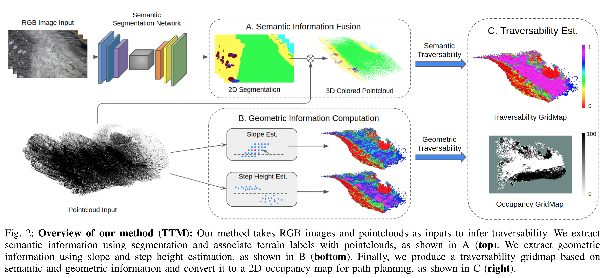
2) 요약
RGB 지형 의미와 LiDAR 경사·단차를 굴착기 사양 기반 규칙으로 결합해 비정형 현장의 주행 가능 영역을 실시간 지도화
3) 방법
- RGB 영상과 LiDAR 점군을 동기화하고 지형 클래스를 점군에 투영
- 격자마다 경사·단차를 계산해 의미 클래스와 굴착기 임계값으로 융합
- 융합 점수를 점유 지도로 변환하고 Hybrid A*의 주행 가능 영역으로 사용
4) 토의
- 한계: 단일 현장·굴착기 기준 임계값에 의존하며 급경사·극한 지형은 안전 문제로 충분히 시험하지 못함
- 연구주제: 차체 자세 시계열로 전복 위험을 예측해 장비와 지형이 달라도 적응하는 학습형 주행성 지도를 개발
[!note] 2022 · VINet 미지 지형 적응 주행 1) 대표그림
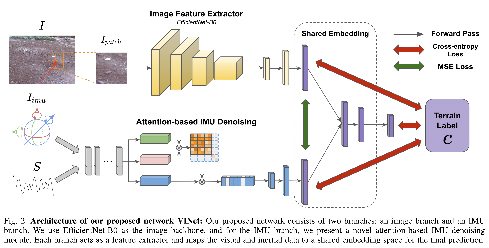
2) 요약
전방 영상과 IMU·구동 명령을 융합해 미지 지형을 가장 적합한 기존 제어기에 연결하고 주행 중 제어기를 전환
3) 방법
- 각 지형에서 영상, IMU, 구동 명령과 제어기별 경로추종 오차를 수집
- 영상 특징과 IMU 시계열 특징을 공통 임베딩에 정렬해 지형 레이블을 학습
- 예측 레이블에 대응하는 동역학 모델과 제어기를 선택해 경로를 추종
4) 토의
- 한계: 미지 지형도 기존 제어기 중 하나로 강제 분류하며 지형 진입 전 안전한 거부나 선제 전환 기능 부재
- 연구주제: 전방 지형의 불확실성을 예측해 적합한 제어기가 없으면 감속하고 경계 전에 선제 전환하는 모델을 개발
[!note] 2023 · 오프라인 RL 강체 굴착 1) 대표그림
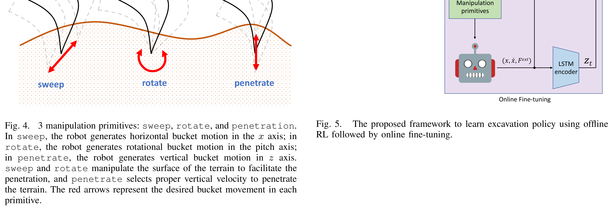
2) 요약
접촉력 기반 sweep·rotate·penetrate 동작을 시연 데이터의 오프라인 RL로 학습해 강체 사이 걸림 없이 버킷을 관입
3) 방법
- 5종 지형에서 원격조작·규칙 정책으로 버킷 자세·속도·접촉력과 동작 파라미터를 수집
- 현재·시연 궤적을 LSTM으로 인코딩하고 IQL로 세 동작 프리미티브의 연속 파라미터를 학습
- 새 지형은 소량 시연으로 지형 표현을 얻고 짧은 온라인 미세조정 뒤 임피던스 제어로 실행
4) 토의
- 한계: 시각 인지가 없고 관입 단계만 7축 로봇팔에서 검증해 실제 유압 굴착기의 전 작업주기를 다루지 못함
- 연구주제: RGB-D 틈새 인식과 압력 기반 residual 제어를 결합해 관입·끌기·닫기·인양을 잇는 실차 정책을 연구
[!note] 2023 · TNES 주행·굴착 통합 1) 대표그림
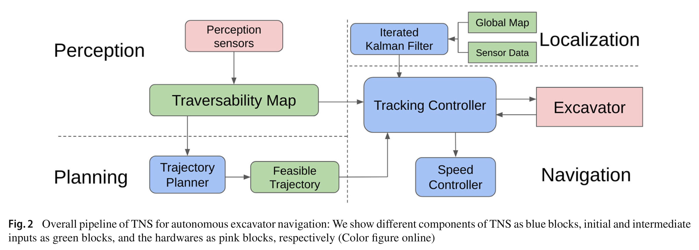
2) 요약
RGB·LiDAR 주행성 지도와 위치추정·경로추종을 AES에 연결해 6.5t·49t 굴착기의 험지 주행과 굴착을 통합
3) 방법
- RGB 의미분할을 점군에 투영하고 격자별 경사·단차를 장비 사양과 융합해 주행성 지도를 생성
- 전역지도 정합과 반복 칼만필터로 위치를 추정하고 Hybrid A* 경로를 속도·추종 제어기로 실행
- 이동 목표와 굴착영역을 AES 작업계획기에 넘겨 주행·굴착·덤핑을 순차 수행
4) 토의
- 한계: 두 기종과 제한된 현장만 시험했고 작업자·다른 장비가 함께 움직이는 환경은 안전상 검증하지 못함
- 연구주제: 작업자·장비의 미래 궤적과 V2X 정보를 반영해 여러 건설기계가 협업하는 안전 계획기를 연구
[!note] 2023 · 건설 자동화용 다중작업 굴착기 1) 대표그림
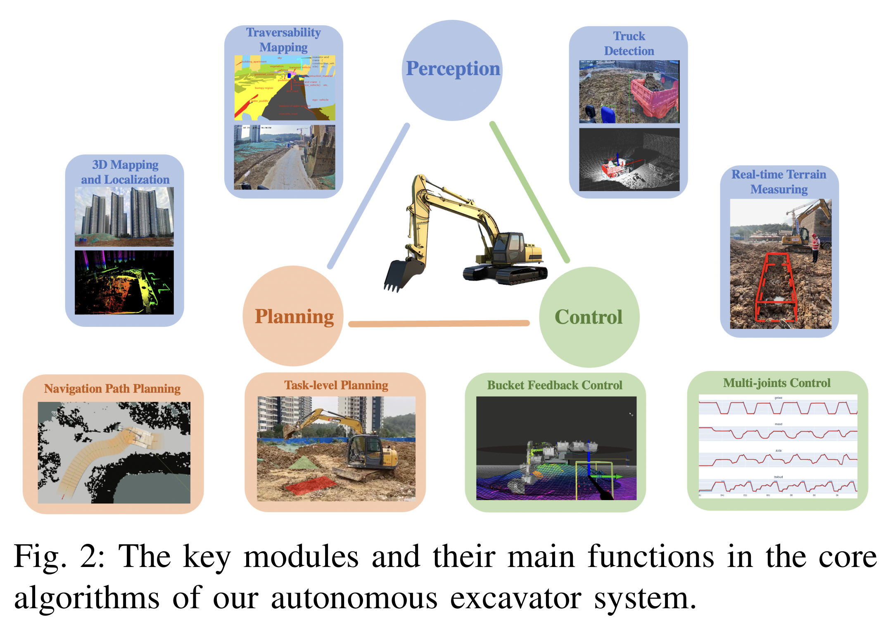
2) 요약
위치추정·지형지도·계층형 계획·유압 제어를 통합해 트럭 상차, 비정형 지형 주행, 트렌칭을 연속 수행
3) 방법
- RTK·LiDAR·카메라로 굴착기 위치, 트럭 자세, 실시간 고도 지도를 추정
- 작업영역과 목표 형상을 입력해 상차·트렌칭을 세부 굴착 및 이동 작업으로 분해
- Hybrid A*와 동작 프리미티브로 주행·팔 궤적을 만들고 장애물 감지 시 정지
4) 토의
- 한계: 통제 구역 검증에 그쳤고, 이동 장애물 회피 없이 별도 안전 모듈이 정지만 수행
- 연구주제: 이동 작업자와 차량의 궤적을 예측해 안전하게 재계획하고 정지 후 작업을 복구하는 주행기를 연구
[!tip] 2024 · ExACT 종단간 굴착 제어 · 🧪 직접 재현 후보 1) 대표그림
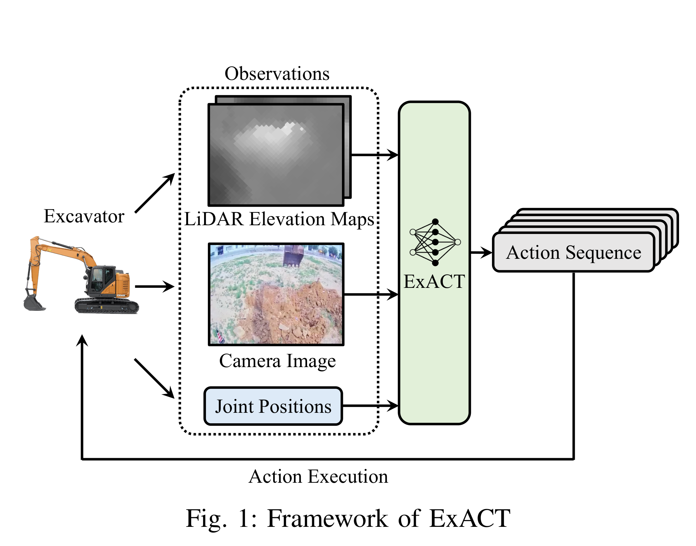
2) 요약
LiDAR 고도지도·카메라·관절 상태에서 Transformer가 미래 동작 묶음을 직접 생성하는 종단간 굴착 정책
3) 방법
- 원격조작으로 관절 상태, 카메라, 작업영역 고도지도와 밸브·관절 명령을 동기 수집
- ACT 기반 조건부 VAE와 Transformer로 미래 동작 묶음을 모방학습
- 겹친 동작 예측을 시간 앙상블로 합쳐 명령하고 기록 센서 기반 시뮬레이터에서 검증
4) 토의
- 한계: 실차 폐루프 시험 부재; 밸브 방식의 고주파 명령 학습 실패와 응답성 저하
- 연구주제: 부하·지연·데드존을 반영한 동역학과 안전 제약을 결합해 ExACT의 실차 폐루프 전이를 연구